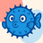

Steps
Walk through a flow on any website and capture each step. Screenshots stay on this computer until you create a board.

Create a token in Blupi under Settings → Chrome Extension, then paste it here.
Walk through a flow on any website and capture each step. Screenshots stay on this computer until you create a board.